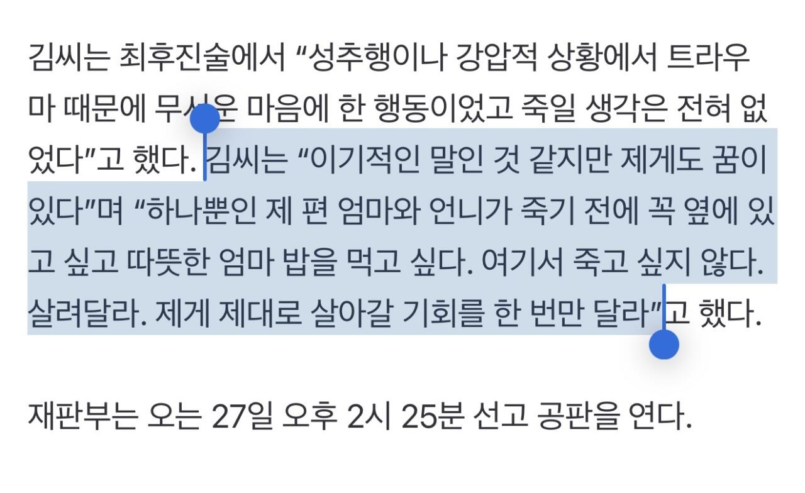

 피해자도 안 죽고 싶었을 것 같은데... 통상 구형량의 절반 정도로 선고된다고 보면, 20년 형 선고받고 10년 복역 뒤 가석방으로 나오는 거 아닌가 싶어서 겁난다..
댓글
수집 당시 댓글 8개
파라말아이솔 · 2 일 전
죽였으면 죽는거지
천마신교주 · 2 일 전
진짜 싸이코패스네 무섭다
칼라바리스타 · 2 일 전
죽일려는 의도가 없는데 치사량 검색하고는 오히려 치사량보다 더 양을 늘렸다는거 ㅋㅋㅋ
드립치고생각함 · 2 일 전
연쇄살인아님?? 남자가 둘죽었다고 들었는데
돈많이벌고싶다 · 2 일 전
사람 3명 죽여놓고는 말이 많아
난코박고죽음을택하겠다 · 2 일 전
깜빵에서도 줫나 미움 받을거같은데 먹는걸로 약타서 사람 죽인게 께림칙할듯 성격도 동성친구 없는거보면 개차반일거 뻔하고
일후회사때려침 · 2 일 전
한 10여년뒤에 나오게생겼네 2040년쯤 또 여럿 죽게생겼네
짜짜게티 · 2 일 전
깜빵에서 고유정이랑 야차 ㄱㄱ